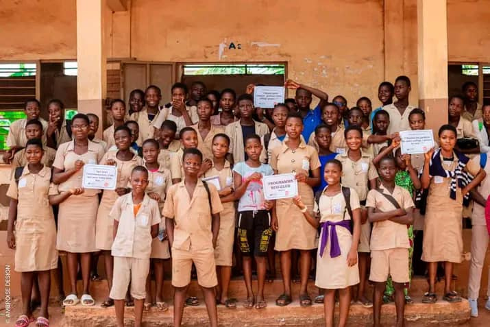
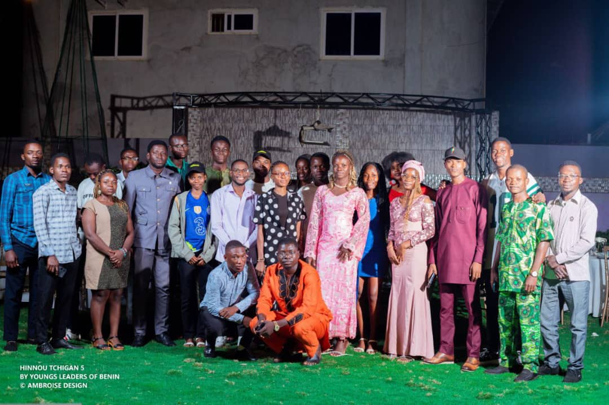

Académique
AcadémiqueThermoSolver
Simuler la chaleur dans les parois.
Excel VBA · Thermique 1D
Voir le projetBâtiment, solaire, systèmes connectés. Choisissez un domaine, explorez une réalisation.
Découvrez les six visuels de communication pour Young Leaders of Benin dans la fiche Affiches & campagnes visuelles.
AcadémiqueSimuler la chaleur dans les parois.
 Académique
AcadémiqueMesurer l’ambiance. Comprendre le ressenti.
 Académique
AcadémiqueSuivre le confort. Piloter les équipements.
 Technique
TechniqueInstrumenter le suivi des panneaux.
TechniqueExplorer le nettoyage mécanisé.
TechniqueExplorer l’énergie du vivant.
TechniqueCommander la lumière depuis le web.
 Technique
TechniqueÉtudier la conservation par le solaire.
TechniqueComparer les options photovoltaïques.
ProfessionnelTrois installations. Trois sites.
ProfessionnelInstaller et suivre la production.
 Professionnel
ProfessionnelContribuer à l’électrification sur chantier.
 Professionnel
ProfessionnelDiagnostiquer. Réparer. Remettre en service.
ProfessionnelComprendre les besoins avant de concevoir.
 Communautaire
CommunautaireContribuer à l’accès à l’énergie.
CommunautaireProjet en cours · Seed to Lead · UM6P
Porter un projet solaire communautaire.

CommunautaireSensibiliser et mobiliser à l’école.

CommunautairePorté par une approche participative et inclusive, Hinnou Tchigan vise à susciter des transformations sociales durables en faveur de l’élimination des violences basées sur le genre (VBG).
AcadémiqueÉtudier le soleil. Ajuster l’inclinaison.
 Graphisme
GraphismeDonner forme aux messages de YLB.
Aucun projet ne correspond. Essayez une autre catégorie, un domaine ou un autre mot.
Les fiches distinguent les photographies et documents des projets des illustrations générées par IA. Les contenus précisent le rôle et le contexte de chaque travail.